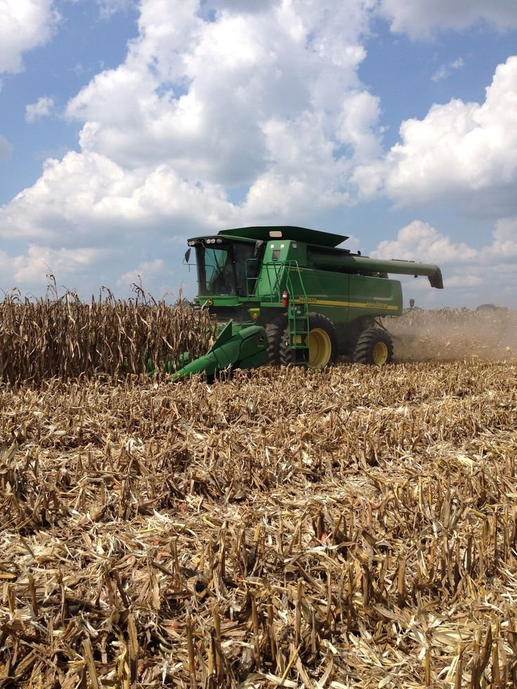
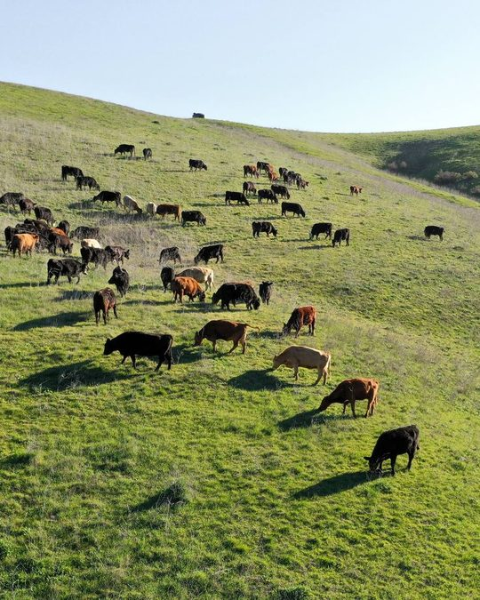
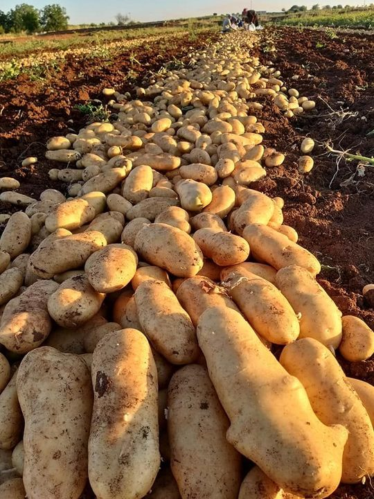
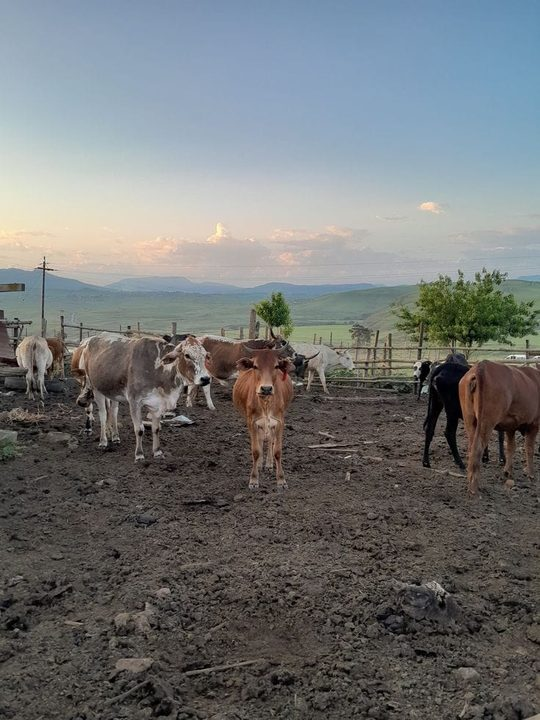

Livestock
Nguni and Brahman cattle, goats, and traditional Zulu chickens, raised with care from a small founding herd.

A growing KwaZulu-Natal farm raising healthy livestock and quality crops, built on a family farming heritage.
Nguni and Brahman cattle, goats, and traditional Zulu chickens, raised with care from a small founding herd.
Corn, potatoes, tomatoes and other seasonal produce grown on the farm.
A childhood spent watching a grandfather's cattle and a grandmother's chickens, now growing into a family farming enterprise.

Nguni and Brahman cattle, Nguni goats and traditional Zulu chickens, raised with care and chosen for their hardiness and suitability to local conditions.

Corn, potatoes and tomatoes grown on our fertile KwaZulu-Natal land, with other seasonal produce through the year.

We farm at two locations in KwaZulu-Natal: Mnambithi, Limehill and Bergville. Find both on the map and call the farm closest to you.
Click or tap a photo to see it larger.
Tell us what you need and we will let you know what is available. Individual buyers and wholesale organisations are both welcome.